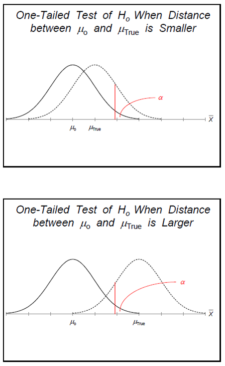
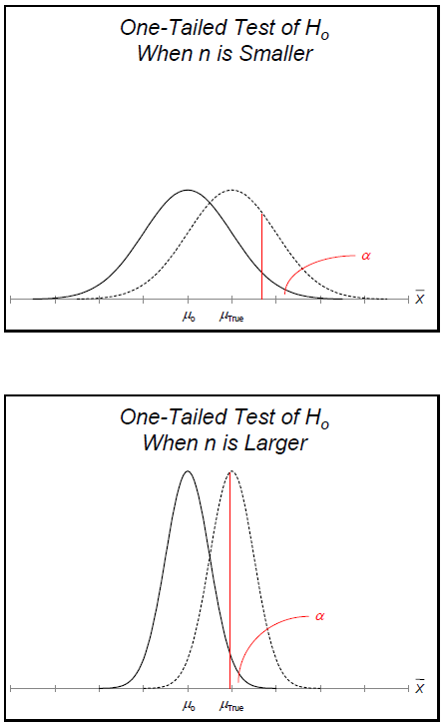
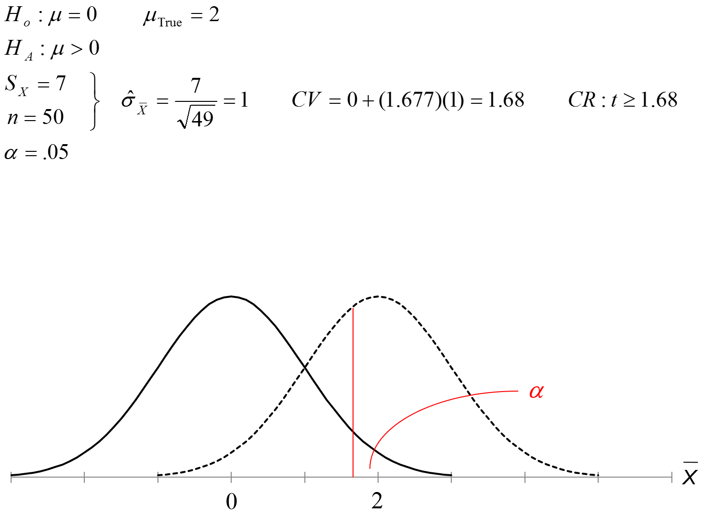
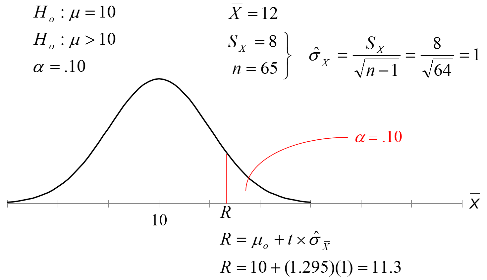

PSQF 4143: Section 11
Brandon LeBeau
Possible Errors
- In making a conclusion from our statistical analysis, there are four possible conclusions that can be made:
- Reject the null hypothesis that is false (correct conclusion).
- Fail to reject a null hypothesis that is true (correct conclusion).
- Reject a null hypothesis even though it is true (Type I Error).
- Fail to reject a null hypothesis even though it is false (Type II Error).
Type I and Type II Errors
| Reject \(H_{0}\) |
Type I Error \(\alpha\) |
Correct \(1 - \beta\) |
| Fail to reject $H_{0} |
Correct \(1-\alpha\) |
Type II Error \(\beta\) |
Type I Errors
- Type I Error occurs when we find an effect or relationship in our sample that is not in the population.
- Have a significant result when in fact it is not significant.
- Reject a true null hypothesis.
- The probability of a Type I Error \(= \alpha\).
- The conventional (historical) \(\alpha\) value is .05.
- Since the probability of a Type I Error is \(\alpha\), the researcher has direct control over how likely a Type I Error would occur.
- Using an \(\alpha = .05\) means that even when no difference exists in the population, 5% of random samples will show a significant difference.
- To reduct type I errors, simply use a smaller \(\alpha\), (i.e. .01 or .001).
Type II Errors
- Type II Error occurs when we do not find an effect or relationship in our sample that exists in the population.
- Have a non-significant result when in fact it is significant.
- Fail to reject a false null hypothesis.
- Probability of a Type II Error \(= \beta\)
- Type II Errors (\(\beta\)) depends on the size of the difference in the population and the sample size.
- A similar measure is power (\(1-\beta\)), the probability that a study will produce a statistically significant result if the research hypothesis is true.
- The conventional level for power is .8, this is what researchers strive for when planning a research study.
Type I and Type II Error Example
- Suppose we're interested in examining the safety of a drug.
- \(H_{0}\): The drug is unsafe.
- \(H_{1}\): The drug is safe.
- What is the type I error?
- Reject \(H_{0}\) when true; more specifically, conclude drug is safe when in fact it is unsafe.
- What is the type II error?
- Fail to reject \(H_{0}\) when it is actually false; more specifically, conclude drug is unsafe when it is actually safe.
- In this example, which error is more harmful?
- Would like want to make the likelihood of a Type I Error to be very small.
Type I and Type II Error Example 2
- Suppose we are testing blood to determine if it is appropriate for use (contaminated or not contaminated)
- \(H_{0}\): The blood is not contaminated.
- \(H_{1}\): The blood is contaminated.
- What is the type I error?
- Conclude blood is contaminated when in fact it is not.
- What is the type II error?
- Conclude blood is not contaminated when it is contaminated.
- In this example, which error is more harmful?
- Type II Error is probably worse here.
- What if there was a blood shortage?
- If there was a serious shortage, you may take the increased type II error risk as opposed to not getting the blood transfusion.
Type I and Type II Error Example 3
- Is the U of A women's soccer team significantly taller than the adult women population?
- \(H_{0}\): The team is not significantly taller.
- \(H_{1}\): The team is significantly taller.
- What is the type I error?
- Conclude team is taller when in fact it is not.
- What is the type II error?
- Conclude team is not taller when it is actually taller.
Type I Error Rate Control
- As a researcher, we have direct control over \(\alpha\).
- Why not make this really small to protect against a type I error?
- This makes it more difficult to reject \(H_{0}\) when we should
- \(\alpha\) and \(\beta\) are inversely related, therefore decreasing the \(\alpha\) will increase \(\beta\).
Guidelines for \(\alpha\) level
- Laboratory Studies
- \(\alpha = .05\) or smaller
- Type I error is considered to be more serious
- Don't want to risk lives or cause harm
- Exploratory Studies
- \(\alpha = .10\) rarely, if ever, bigger than this
- Type II error is considered to be more serious
- Don't want to ignore something unnecessarily
How to increase power
- Increase sample size
- Intensify or prolong treatment
- Increase the type I error rate (i.e. \(\alpha\))
- Use a one-tailed test rather than a two-tailed test
- Use a stronger research design: e.g. paired t-test rather than pooled t-test
Practical vs Statistical Significance
- Having a statistically significant result, does not necessarily mean that we have a result that is of practical importance. \[ \mbox{Test Statistic} = \frac{\mbox{OBS - HYP}}{SE} \]
- The magnitude of the test statistic depends on both the numerator and denominator.
Test Statistic Numerator
- When the null hypothesis is true, the difference between observed mean and hypothesized mean is due to random variation.
- When the null hypothesis is false, the difference between observed mean and hypothesized mean depends partly on random variation and partly between difference between hypothesized mean and true mean.
- Other things equal, the larger the discrepancy between hypothesized mean and true mean, the larger the numerator, hence the larger the test statistic.

Test Statistic Denominator
- The standard error
- This measures only random variation
- Other things being equal, the larger the sample size, the smaller the standard error
- If you have a very large sample size, the standard error can be very small.
- Therefore, even with a very small difference between observed mean and hypothesized mean, you can end up with a large value for the test statistic, thus leading to a statistically significant result.
- However, the result may not be of practical importance - too small to make a difference in the real world.

Practical vs Statistical Significance 2
- In other words, with a large enough sample, even a very small difference between observed mean and hypothesized mean can lead to a rejection of the null hypothesis.
- In cases like this, we have a result that is statistically significant, but in which the difference between hypothesized mean and true mean is so small as to be unimportant in a practical sense.
Type I Errors, Type II Errors, and Power
- \(Pr(\mbox{Reject true } H_{0}) = Pr(\mbox{Type I Error}) = \alpha\)
- \(Pr(\mbox{Reject false } H_{0}) = Pr(\mbox{Type II Error}) = \beta\)
- \(Pr(\mbox{Reject false } H_{0}) = Power = 1 - \beta\)
- As \(\alpha\) increases (decreases)
- Power increases (decreases)
- \(\beta\) decreases (increases)
- Changing the sample size does not affect \(\alpha\)
- As n increases, \(\beta\) decreases, power increases, \(\alpha\) does not change.
Type I Errors, Type II Errors, and Power Examples
 
Calculating \(\beta\) and Power

- Suppose \(\mu_{true} = 12\) for this example.